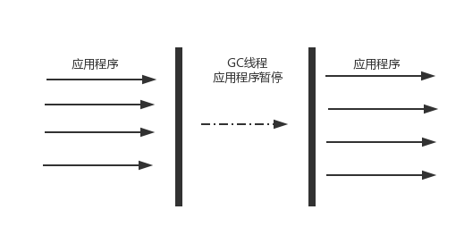
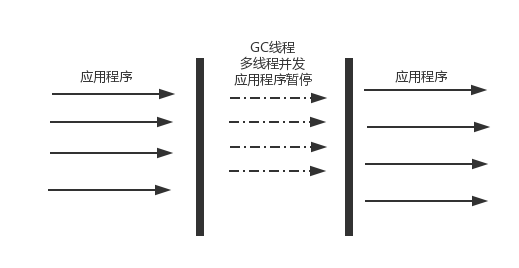
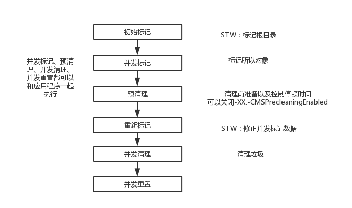
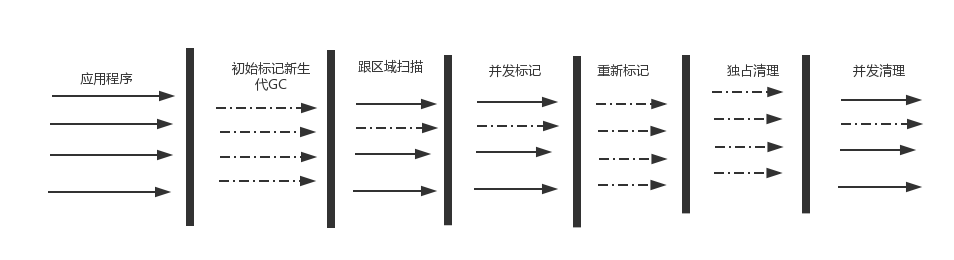

串行垃圾回收器
串行垃圾回收器 是使用单线程进行垃圾回收的回收器。每次回收时，只有一个工作线程，适用于并行能力弱的计算机。串行回收器专注性和独占性往往有更好的性能表现。
-XX:+UseSerialGC：新生代、老年代都是用串行回收器-XX:+UseParNewGC:新生代使用ParNew回收器，老年代是使用串行回收器-XX:+UseParallelGC:新生代使用ParallelGC回收器，老年代使用串行回收器.

¶新生代串行回收器
主要有两个特点：
- 它仅仅使用单线程进行垃圾回收
- 它是独占式的垃圾回收
在串行收集器回收垃圾时，Java应用程序的线程都需要暂停，等待垃圾回收完成。
新生代串行回收器使用复制算法,在硬件不是很优越的环境中可能性能优于并行回收器和并发回收器
¶老年代串行回收器
老年代串行回收算法是使用的标记压缩算法.它是串行的独占式的垃圾回收器。老年代串行回收器启动，一般STW（Stop-the-world）会更加的长.(可作为CMS回收器的备用回收器)
并行回收器
并行回收器在串行的基础上进行了改进，使用了多线程进行垃圾回收。可以缩小垃圾回收所需的实际时间。

-XX:+UseParNewGC：新生代使用ParNew回收器，老年代是使用串行回收器-XX:+UseConcMarkSweepGC:新生代使用ParNew回收器,老年代使用CMS回收器
¶新生代ParNew回收器
parNew是工作在新生代的垃圾回收器，它只是简单的将串行回收器多线程化，回收策略、算法、参数等与新生代串行回收器相同.在并行能力较强的CPU上，停顿时简要短于串行回收器。
在工作时可以使用-XX:ParallelGCThreads参数指定线程数量.默认情况下：当cpu小于8个时，ParallelGCThreads=CPU数;当cpu>8时，ParallelGCThreads = 3+(5*CPU_NUMBER)/8.
¶新生代ParallelGC回收器
新生带ParallelGC回收器也是复制算法、多线程、独占式.ParallelGC非常关注系统的吞吐量.
有以下ParallelGC几个参数可以使用
-XX:+UseParallelGC：新生代使用ParallelGC回收器，老年代是使用串行回收器-XX:+UseParallelOldGC:新生代使用ParallelGC回收器，老年代是使用ParallelOldGC回收器-XX:MaxGCPauseMillis：设置最大垃圾回收时间大于0的整数。-XX:GCTimeRatio:设置吞吐量大小0-100的值。用户设置系统垃圾回收和正常工作的时间。如果GCTimeRatio=n,系统将花不超过1/(1+N)的时间用于垃圾回收.系统默认n = 19 则系统将用不超过5%的时间来垃圾回收-XX:+UseAdaptiveSizePolicy:打开自适应GC策略，该模式下 新生代大小、eden和survivor的比例、晋升老年代的对象年龄等参数都会自动的调整.目的是：达到堆大小、吞吐量和停顿时间之间的平衡点。让虚拟机可以自己完成调优工作。
¶老年代ParallelOldGC回收器
在老年代使用的Parallel回收器（多线程并发）。和新生代一样关注系统的吞吐量。
使用的是标记压缩算法(JDK1.6及以后才能使用)。
|
|
设置参数也在新生代Parallel中讨论过
-XX:+UseParallelOldGC：在新生代使用ParallelGC回收器,在老年代使用ParallelOldGC回收器.(这会非常关注系统的吞吐量)-XX:ParallelGCThreads:设置线程数（在上一个小结有说明）
CMS回收器(Concurrent Mark Sweep)
并发标记清理，主要关注系统的停顿时间。使用标记清除算法 同时使用多线程并行的回收垃圾回收器。
¶工作步骤
主要步骤有：初始标记,并发标记,预清理,重新标记,并发清理,并发重置.接下来我画个图说明他们主要工作。

在初始标记和重新标记两个部分需要停顿。预处理是并发的，预处理会刻意的等待一次新生代的GC发生后，然后根据历史数据预测下一次的新生代GC可以能发生的时间，在中间时刻进行重新标记，避免新生代GC和重新标记重合，尽量减少一次停顿时间。
¶主要配置参数
- 1、-XX:+UseConcMarkSweepGC.：启用CMS回收器
- 2、-XX:ConcGCThreads 和 -XX:ParallelGCThreads 参数手动并发线程设置.自动设置并发线程数量（ParallelGCThreads +3）/4。
- 3、-XX:CMSInitiatingOccupancyFraction=[0-100]：指定一个回收的阀值。当
老年代到达这个阀值时开始回收. - 4、-XX:+UseCMSCompactAtFullCollection：完成一次CMS后进行一次
内存碎片整理。-XX:CMSFullGCsBeforeCompaction=[参数]设定多少次CMS后整理一次内存碎片。
¶清理永久代的Class回收
如果需要清理perm区。必须打开-XX:+CMSClassUnloadingEnabled。默认情况下触发FUll GC 时将回收清理Prem区.
G1回收器(简要描述)（Garbage First Garbage Collector）
G1分代：年轻代、老年代 。有eden区和servivor区。也使用了分区的算法。具有以下特性
- 并行性
- 并发性
- 分代GC
- 空间整理
- 可预见性。
¶G1内存划分和主要收集过程
G1回收器将堆分区。每次只收集其中几个区域。目的是控制停顿时间
收集分为4个阶段
- 新生代GC
- 并发标记周期
- 混合收集
- 视情况进行FUll GC
¶新生代GC
如果eden区被沾满的话就会启动
¶G1并发标记周期
为了降低一次标记的停顿时间，类似于CMS
分为以下几个方面
- 初始标记：伴随一次新生代GC，新生代eden区被清空
- 根区域扫描：扫描由servivor区直接可达的老年代区域
- 并发标记
- 重新标记：采用STAB（Snapshot-At-The-Beginning）算法，为存活对象创建一个快照。
- 独占清理：计算存活比例排序。确定混合回收区域。
- 并发清理：识别并清理完全空闲的区域。

¶混合回收
在并发标记阶段有一部分对象被回收。但是比例比较小。但是明确的知道了那些区域的垃圾比较多，混合回收就可以专门针对这些区域进行垃圾回收。
这个阶段会执行正常的新生代GC，也会选取一些被标记的老年代区域进行回收（然后存活的对象将被移到别的区域）。减少垃圾回收
¶当内存足时Full GC
在混合Gc时发生空间不住或者新生代GCsurvivor区和老年代无法容纳幸存对象时也会导致Full GC。
¶G1相关参数
- -XX:+UseG1GC:打开G1收集器
- -XX:MaxGCPauseMillis:指定目标最大停顿。（用于调优）
- -XX:ParallelGcThreads:设置并行回收时的线程数.
有关对象内存分配和回收的问题
¶禁用System.GC()
System.GC()会显示的直接触发 Full GC对老年代和新生代进行回收。（finalize还会的线程中的对象进行回收）
-XX:+DisableExplicitGC使system.gc是一个空函数，默认不使用。
默认使用System.GC()他会使用传统的Full GC而不是优化过后的回收器。
¶对象何时进入老年代
- 每次新生代回收时都会给每个对象的年龄加1.当到达一定年龄还没死。就会进入老年代。控制参数
MaxTenuringThreshold默认为15. - 大对象进入老年代。大对象可以直接晋升到老年代（因为eden区或者servivor无法容纳对象）。控制参数
PretenureSizeThreshold设置对象直接晋升到老年代的阀值。